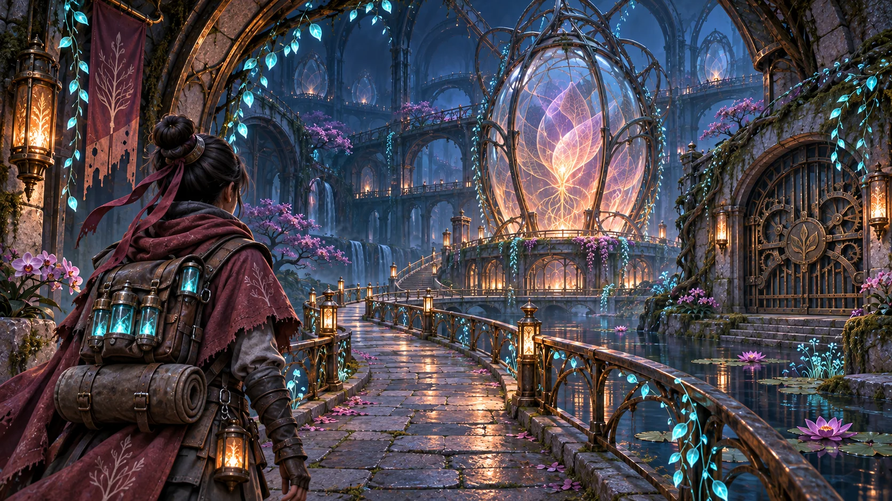
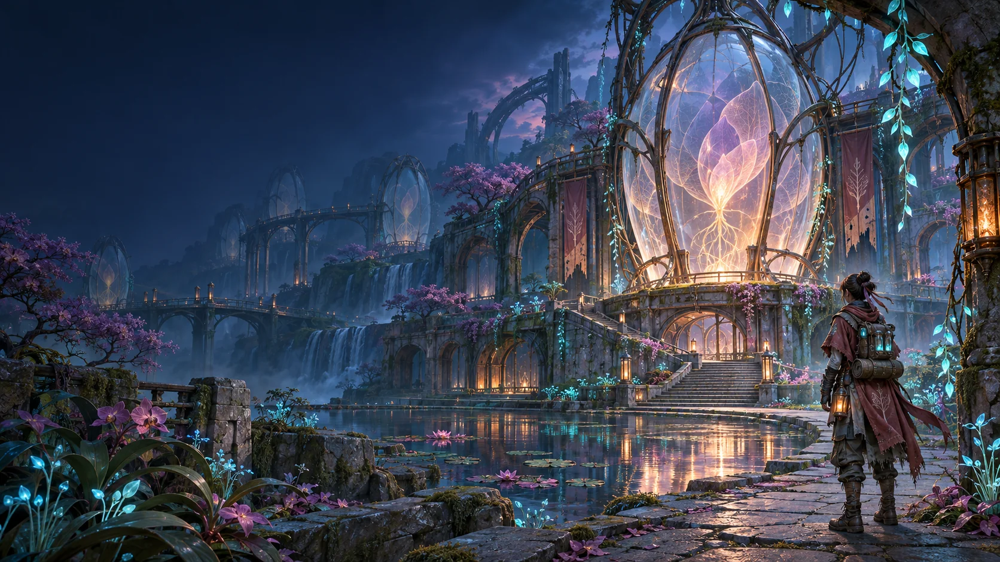
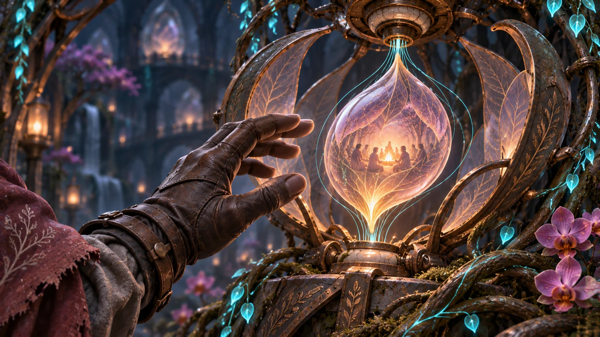
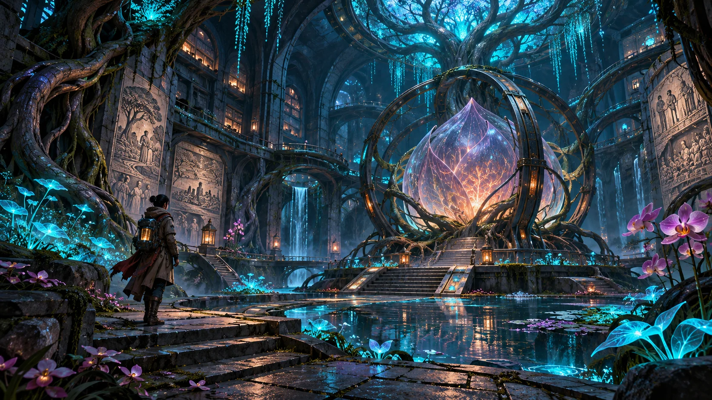

01 / CULTURAL PREMISE
Begin with people.
Anthropology informs the central question: what do we preserve, and how do stories shape the spaces we inhabit?

What if a place could remember us? An imagined world where botanical systems preserve the stories people leave behind.
The Living Archive is a speculative environment built around one question: how might cultural memory take physical form in a world where nature and technology have evolved together?
A traveler enters an extraordinary archive. At its center, a dormant seed holds fragments of collective memory. As it awakens, light spreads through the roots and the environment comes alive.
Personal concept project. The scenes and motion are AI-assisted visual explorations, not a playable game or an implemented interactive environment.

Stone corridors, bronze structures, suspended botanical forms, and water establish a world where memory feels both ancient and alive.


A single gesture brings the larger premise into focus: the archive does not simply store objects. It carries traces of shared experience.
Recurring cyan roots and warm amber light communicate the awakening. The seed is the visual anchor connecting the sequence.
AI-assisted cinematic exploration of the seed's transformation and the environment's response.
The closing wide reveal brings the environment and the narrative premise together.
Anthropology informs the central question: what do we preserve, and how do stories shape the spaces we inhabit?
Recurring bronze arches, bioluminescent roots, translucent seed forms, and restrained orchid accents create a recognizable environment.
Build a visual progression from arrival to discovery, activation, and transformation using AI-assisted stills and motion.
Tools and attribution: AI-assisted visual concept development and video generation using Adobe Firefly. Creative concept, narrative framing, visual direction, and selection by Sidney Magaña. This project does not claim 3D modeling, game-engine development, or production of a playable environment.